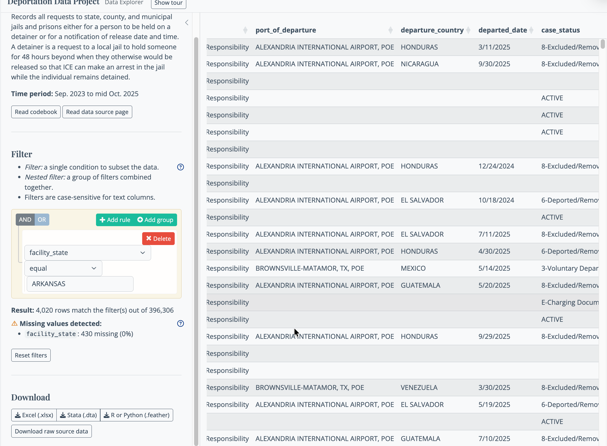

ICE data overview
The Deportation Data Project has extensive documentation on their process, the structure of the tables, and individual data elements on its website. We strongly recommend you watch its webinar produced in December 2025 as a primer to the data.
The data acquired by the Deportation Data Project comes in four separate tables that can often be linked together by a unique identifier for each immigrant.1
Arrests
ICE records each arrest made under its authority, called “administrative warrants”. These are different than criminal warrants, and allow ICE to arrest people based on a form filled out by an immigration officer rather than a judge. It’s unclear whether arrests made without warrants are included in the arrest data. There are two situations in which an arrests are NOT be included in the arrest table: First, when ICE arrests someone on a criminal warrant and sends them through the normal U.S. prosecution and court system. These would normally include any U.S. citizen, including those arrested for interfering with ICE. The second case is when an arrest is made under that authority of Customs and Border Protection, which includes the Border Patrol.2
Although the data already included an indicator for criminality – whether the person had been convicted of a crime in the U.S., whether they were facing charges, or were simply immigration law violators – the BLN has enhanced the data based on information in other tables included in the collection. As long as they were detained, we have additional details on the most serious criminal conviction, which are often DUI or drug possession, not violent crimes.
One serious drawback to the original arrest data is geography: We don’t know where the person was arrested. Until July 2025 – after which it’s rare – about 10 percent of the rows didn’t even show in which state the arrest happened. There were hints as to the location. In some states, the ICE “Area of Responsibility” is reasonably small, such as California and Texas. But in the interior of the country, this region can span many states. There is a “landmark” listed, but it’s usually quite broad. You will have to do some calisthenics to make it usable, and it often only refers to the closest detention site.
We have enhanced the data to help with geographic specificity. First, if the arrest was the result of asking local jails to hold the immigrant for ICE (the “detainer”), we can sometimes add that location to the data. Second, if the arrest resulted in a detention (which it usually does in the Trump administration) , we can use the first location of detention as a proxy for knowing the arrest. Just know that you will not usually be able to isolate a specific location, or even just your own county, from the arrest data.
Detentions
The detention data is the most complex, but also the richest, data in the system. One reason is that everyone in detention is officially engaged with the government, which means there are very few rows that are missing the unique identifiers we use to track people rather than events. Another reason is that each stop is tracked from the time of initial processing through deportation. Finally, for the purpose of local reporting, we know the exact location of each detention site, unlike the geography of arrests.
There are two kinds of stories that the detentions table can help with: The number of people held in your area, and for how long; and the distance people were sent, especially in the first few days.
BLN is providing a day-by-day count of people in each facility, both as a total number of people who were there at any point in a day, and the number who were there overnight. We’ve also included some daily statistics on how long people spent in the facility, which is most useful when you are interested in overstays at short-term holding and processing centers that lack beds or showers.
We have enhanced the detention data to include the county and state of the detention facility, total distance traveled by an immigrant during a detention stay, and the distance they traveled in the first week.
Detainers
A detainer is a request that an immigrant who is jailed locally be held for ICE. Historically, ICE only requested this for people convicted or accused of violent crimes, but the Trump administration is now requesting it for virtually everyone whose fingerprints match someone out of status. Some states, like California, don’t allow their jails to cooperate with ICE. Others, like Texas and North Carolina, require that jails cooperate. Most leave it up to local officials.
The detainer data is of most use if you want to report on how your local jails work with ICE, either using the 287g program (which deputizes local law enforcement to act on ICE’s behalf) or with detainers. You can check whether your local jail is part of [the 287g program on ICE’s website](https://www.ice.gov/identify-and-arrest/287g. (Look for the downloadable Excel spreadsheet toward the bottom of the page.)
This table is missing information about what happened to the detainer about 40 percent of the time, making it of limited use. We have added the location of the facility for the detainer in the arrest data for those that ended in an ICE arrest, but we are not providing enhanced data or reporting recipes for this aspect of the data collection. You can filter and download the raw data using the slicer from the Deportation Data Project’s site.

(Documentation for each column and the number of empty rows is shown in the project’s codebook.)
Removals
The most recent release of the data had a lot of inaccurate information about people who have been deported, or removed. The DDP is withholding the data until it can resolve some of these problems. Most troubling is that this version of the data had many fewer people logged than previous versions, which should be impossible.
When it becomes available, we will use it to fill in some information about people that is mysteriously left out of the other tables. One of the most important element available only in the removal table is the date that the immigrant first came to the U.S. Without that, for example, it’s impossible to identify Dreamers (immigrants brought to the U.S. as children). It also has the date of the most serious conviction, which is also missing elsewhere. From that, we could identify people whose most serious offense was, for example, marijuana possession many decades ago.
Reporters have used information on whether the immigrant has been removed or returned home that is included in other tables.
What you can’t do with this data
The accuracy of this data hasn’t really been tested and is hard to quantify. The government has declined to provide any explanations and frequently supply data that is at odds with earlier versions. But we do know of some holes in the data that will limit what you can say about specific story ideas.
Importantly, the data comes from ICE, so it excludes any information about people arrested and detained solely by the Border Patrol using its authority. Many of these people are eventually detained in an ICE facility, so they are more likely to be included in the detention data than in arrests. It’s possible – but we just don’t know – that Border Patrol is using ICE warrants to arrest people, which would in turn get them into this data. One way people have gotten around this is to focus just on the local processing and holding center rather than arrests. A future recipe will show you how to do that.
There are NO arrests or detentions of U.S. citizens recorded anywhere in the database. We know this is wrong, but don’t know why. It could be that ICE has mistakenly called someone a citizen of another country; it could be that there was never an administrative warrant or immigration court case about the person, so they effectively don’t exist in this data. We just don’t know.
Unaccompanied children are probably missing from this data – they are supposed to be turned over to the Office of Refugee Resettlement and are not held in ICE custody. But children are definitely included in the arrest and detention data. We expect most of them are part of families, but there is no way to match them up with their parents or guardians. Again, we just don’t know.
You will probably be unable to limit your analysis to people arrested in your immediate area. The data sometimes shows a metropolitan area, but frequently the location of the arrest refers to the first place the people were detained. Larger metropolitan areas are often identified, but the best you can do in a lot of instances is find the state.
In the spirit of simplifying the data analysis, we have removed a lot of columns from each table and simplified the categories in others. Consider reviewing the full contents of the tables in the Deportation Data Project’s for more details, but be aware that a lot of the information that appears to exist is missing for most rows.
We’re ignoring one tantalizing table called
encountersbecause the way that ICE produced it created something of very limited use for local reporters – there is no usable location recorded and most of the rows don’t contain a unique identifier for the person. The most recent release also had problems and the project is withholding the data until it can be clarified↩︎Some Border Patrol arrests might be included in the data, when they are made using an administrative warrant. We don’t actually know whether those are included.↩︎